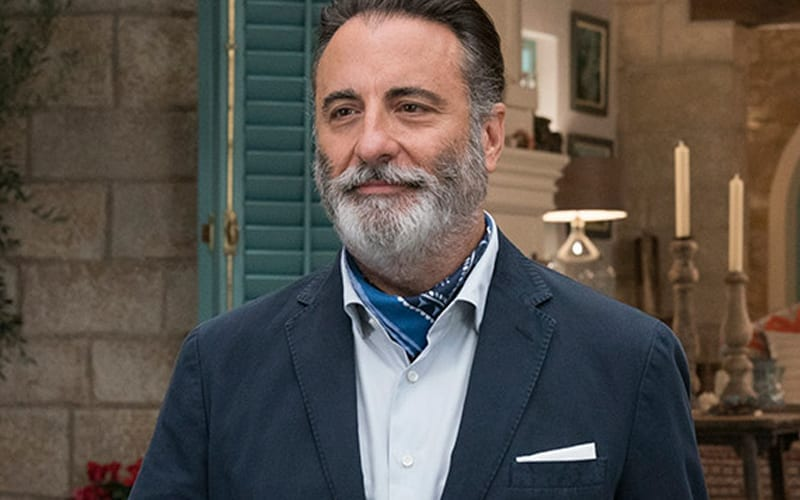

Andy García

Naceu em Cuba, emigrou com a família para os EUA em 1961. É casado e pai de três meninas e um menino.
Ele apareceu em um papel coadjuvante em 1985 em The Mean Season ao lado de Kurt Russell. Em 1987, García se tornou mundialmente
conhecido ao atuar em The Untouchables de Brian De Palma, filme que também contava com Kevin Costner, Sean Connery e Robert De Niro.
Em 1989, García fez o filme Black Rain, com Michael Douglas. Também em 1989, Francis Ford Coppola estava lançando The Godfather: Part III.
García ganhou o papel de Vincent Mancini, filho ilegítimo de Sonny Corleone, e ganhou uma indicação ao Oscar de Melhor Ator Coadjuvante por sua performance.
Milita no movimento anticastrista e, em 2000, se pronunciou publicamente, ao lado da cantora Gloria Estefan, a favor da permanência do menino Elián González nos Estados Unidos, após sua mãe ter morrido afogada ao tentar alcançar Miami em uma balsa. A Justiça norte-americana determinou a volta de Elián para Cuba, em companhia do pai.
Além de papéis em filmes de ação, como Ocean's Eleven (2001), sua seqüência de 2004 e Confidence (2003), estrelou o filme de 2004 sobre a vida do pintor italiano Amedeo Modigliani. Sua primeira atuação como diretor foi em The Lost City.
O Ator Participou dos Seguinte Filmes
- 2023 - Os Mercenários 4
- 2021 - Wrath of Man
- 2018 - The Mule
- 2018 - Book Club
- 2018 - Mamma Mia! Here We Go Again
- 2017 - Tempestade: Planeta em Fúria
- 2016 - Max Steel
- 2014 - Tiras, Só que Não
- 014 - Rio 2
- 2013 - At Middleton
- 2012 - A Dark Truth
- 2012 - For Greater Glory: The True Story of Cristiada
- 2012 - 5 Days of War
- 2010 - Across the Line: The Exodus of Charlie Wright (video)
- 2009 - City Island
- 2009 - The Pink Panther 2
- 2007 - Ocean's Thirteen
- 2007 - The Air I Breathe
- 2007 - A Última Cartada
- 2006 - The Pink Panther
- 2005 - The Lost City
- 2004 - Ocean's Twelve
- 2004 - Modigliani
- 2004 - The Lazarus Child
- 2004 - Twisted
- 2003 - Confidence
- 2003 - Just Like Mona
- 2002 - Onze Homens e um Segredo[1]
- 2001 - Ocean's Eleven
- 2001 - The Man from Elysian Fields
- 2001 - The Unsaid
- 2001 - Lakeboat
- 2000 - For Love or Country - The Arturo Sandoval History
- 1999 - Just the Ticket
- 1998 - Desperate Measures
- 1997 - Hoodlum
- 1997 - The Disappearance of Garcia Lorca
- 1997 - Night Falls on Manhattan
- 1995 - Steal Big, Steal Little
- 1995 - Coisas para fazer em Denver quando se está morto
- 1994 - Quando um Homem ama uma Mulher
- 1992 - The Godfather Trilogy: 1901-1980
- 1992 - Jennifer 8
- 1992 - Hero
- 1991 - Dead Again
- 1990 - The Godfather: Part III
- 1990 - A Show of Force
- 1990 - Internal Affairs (film)
- 1989 - Black Rain
- 1988 - American Roulette
- 1988 - Stand and Deliver
- 1987 - The Untouchables
- 1986 - 8 Million Ways to Die
- 1985 - The Mean Season
- 1983 - Blue Skies Again
- 1983 - A Night in Heaven
- 1979 - Guaguasi
Pontos fortes
Andy Garcia é um ator conhecido por sua versatilidade e talento. Alguns de seus pontos fortes incluem:
- Carisma e presença na tela: Andy Garcia possui uma presença magnética que cativa o público em seus papéis.
- Habilidade de interpretação: Ele é conhecido por sua capacidade de mergulhar profundamente em seus personagens e transmitir uma ampla gama de emoções.
- Versatilidade: Garcia demonstrou habilidade em uma variedade de gêneros, desde dramas até comédias e filmes de ação.
Pontos Fracos
Quanto aos pontos fracos, é mais difícil apontar, pois cada pessoa pode ter opiniões diferentes sobre os aspectos que podem ser considerados menos fortes em sua carreira. No entanto, alguns críticos podem mencionar:
- Escolha de papéis: Como acontece com muitos atores, algumas escolhas de papéis de Andy Garcia podem ter sido menos bem recebidas pelo público ou pela crítica.
- Variedade limitada de papéis: Embora seja versátil, algumas pessoas podem argumentar que ele às vezes é escalado para papéis semelhantes, o que pode limitar sua capacidade de mostrar toda a extensão de seu talento.
Essas são apenas observações gerais e podem variar dependendo das opiniões individuais.
Onde ele está agora?
Atualmente, Andy Garcia reside em Toluca Lake, Los Angeles, Califórnia. Mais recentemente, estrelou como Fernando Cienfuegos na comédia musical Mamma Mia! Aqui vamos nós novamente lançado em 2018.
Voltar a Página Anterior
Fonte: Wikipédia